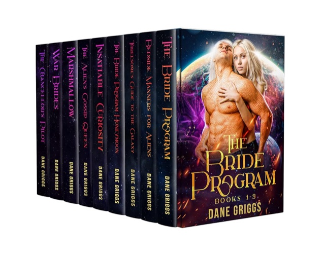

The complete Bride Program · 9 books
The Bride Program Box Set
What could possibly entice human women to willingly join a program meant to match them with snake-like alien husbands?
Sexy escapes with heart, humor, and no Mary Sues.
7,344 ratings across the Saving Ceraste series
“A surprising find.”
I found the first book of this series, while doom scrolling for something to read at 2am. Nothing held my interest for more than a chapter or two. 3 days later I've completed the series and am totally addicted.
All nine books inside
Maya joins for the chance to save the life of a loved one. Serena jumps at the chance to help cure cancer. Kidnap victim Chelsea just wants to escape her tormentors, but ends up finding love with not one but two aliens... And the list goes on.
Some women want adventure, some want to serve the greater good and some want an escape but all find the love they never knew they needed.
What readers say on Goodreads
“I loved it”
I have read the individual books but to be able to from one right into the next one was really nice. In this series you have so many intertwined story lines it really keeps your attention.
I enjoyed the "Bride Program" box set for the diversity of the women featured. … the women were not all lonely timid females, but women of courage and substance.
“very enjoyably different”
I just finished book 2 and am thoroughly enjoying this series!! It’s different in a very good way.
“The Bride Program Series”
Nine books to tell an exciting, interesting story about a species trying to find a way to create a future for themselves. I don’t have a favorite book because they’re all so good.
Nine brides. Nine alien heroes. No Mary Sues. All nine books, one click.